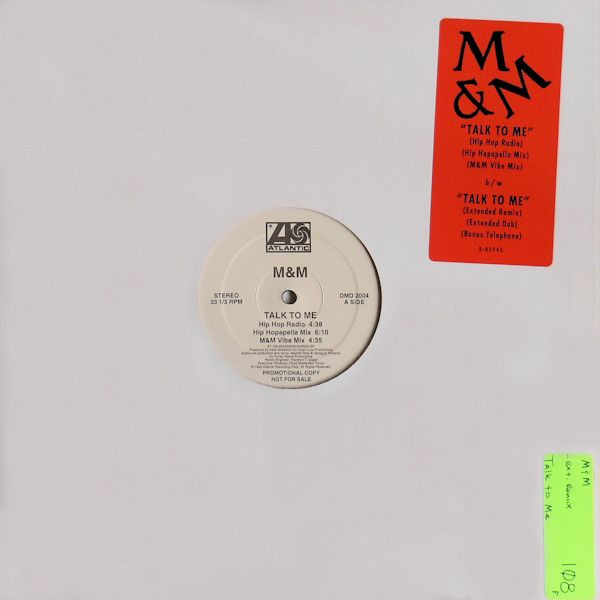
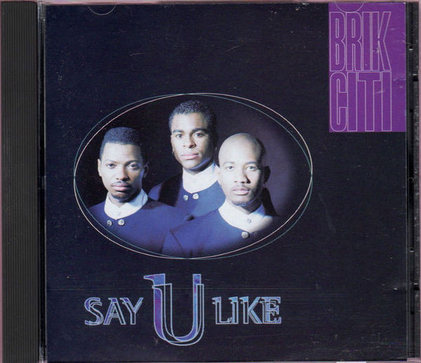
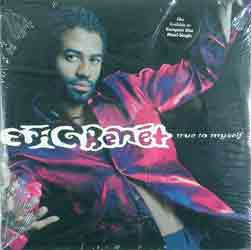
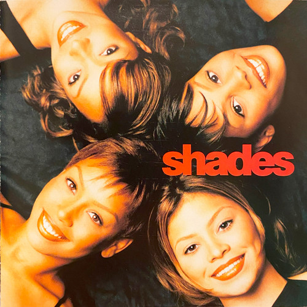
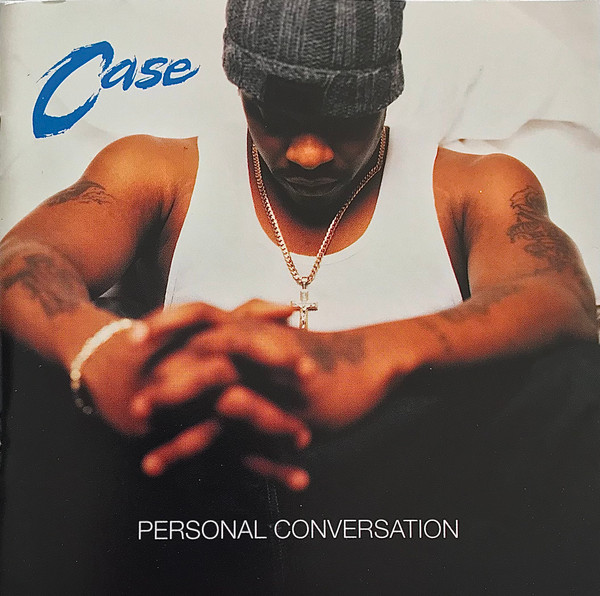

Reimagined as sleeves you flip.
A separate shelf for credits that don't belong on a decade page — straight hip-hop cuts and other one-offs, cover art first. Click a sleeve to flip it and read every pressing on the back, like flipping a record over to check the label.
Anything marked red is missing in lossless — either it's not in my collection, or a lossless copy just doesn't exist.
1992

SingleM & M — Talk To Me
Atlantic
- Talk To Me (Bonus Telephone)
- Talk To Me (Extended Dub)
- Talk To Me (Extended Remix)
- Talk To Me (Hip Hop Radio)
- Talk To Me (Hip Hopapella Mix)
- Talk To Me (M&M Vibe Mix)
1993
 LP
LP
MC Lyte — Ain't No Other
First Priority Music
- 02. Brooklyn
- 03. Ruffneck
- 10. I Go On
 Single
Single
Riff — Judy Had A Boyfriend
EMI Records
- Judy Had A Boyfriend (12″ Raggae & Rap)
- Judy Had A Boyfriend (12″ Raggae Bass Radio)
- Judy Had A Boyfriend (12″ Raggae Bass)
- Judy Had A Boyfriend (12″ Raggae Instrumental)
- Judy Had A Boyfriend (Accapella)
- Judy Had A Boyfriend (Full 12″ Radio No Rap)
- Judy Had A Boyfriend (Mucho Edits 12″ W+Rap)
- Judy Had A Boyfriend (Mucho Radio W/Rap)
- Judy Had A Boyfriend (Percapella)
1994

SingleBrik Citi — Say U Like
Motown
- Say U Like (A Capella)
- Say U Like (Lp Version)
- Say U Like (Pop Edit)
- Say U Like (Radio Edit)
- Say U Like (Remix Edit)
1996
 Single
Single
DG — Hush (Don't Say A Word) (Remix)
HCIBD Records
- Hush (Don't Say A Word) (R&B Mix Radio Edit)
- Hush (Don't Say A Word) (Remix Radio Edit)

SingleEric Benét — True To Myself
Warner Bros. Records
- True To Myself (Doogie Funk Remix Instrumental)
- True To Myself (Doogie Funk Remix)
1997

SingleShades — I Believe (Remix)
Motown
- I Believe (Remix)
1999

SingleCase — Another Minute
Def Soul
- Another Minute